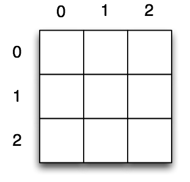
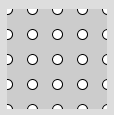

Eine Tabelle in einer Tabellenkalkulation besteht aus Zeilen und Spalten, die durchnumeriert sind. So kann man jede Zelle über Zeilen- und Spaltennummer ansprechen:

Das gleiche Prinzip findest du bei mathematischen Matrizen oder einem Schachbrett wieder. Jetzt kann es sein, dass du alle Zellen einer Tabelle oder alle Einträge einer Matrix auf Null (oder einen andere Standardwert) setzen musst. Dazu musst du also alle Kombinationen von Zeilen- und Spaltennummer durchlaufen.
Du kannst dir denken, dass du mit einer For-Schleife leicht alle Zeilen durchlaufen kannst:
for (int z = 0; z < 3; z++) {
println("Zeile " + z);
}Zeile 0
Zeile 1
Zeile 2Genauso leicht kannst du alle Spalten durchlaufen:
for (int s = 0; s < 3; s++) {
println("Spalte " + s);
}Spalte 0
Spalte 1
Spalte 2
Jetzt möchtest du für Zeile 0 alle Spalten 0, 1, 2 durchlaufen, dann für Zeile 1 nochmal und zum Schluss für Zeile 2.
Das erreichen wir, indem wir innerhalb der ersten For-Schleife (Zeilen) die zweite For-Schleife (Spalten) laufen lassen:
for (int z = 0; z < 3; z++) {
for (int s = 0; s < 3; s++) {
println("Zeile " + z + ", Spalte " + s);
}
}Zeile 0, Spalte 0
Zeile 0, Spalte 1
Zeile 0, Spalte 2
Zeile 1, Spalte 0
Zeile 1, Spalte 1
Zeile 1, Spalte 2
Zeile 2, Spalte 0
Zeile 2, Spalte 1
Zeile 2, Spalte 2Man spricht hier von zwei verschachtelten For-Schleifen. Dabei ist die Zeilenschleife die äußere Schleife und die Spaltenschleife die innere Schleife.
Man kann die Ausgabe so ändern, dass nur die Spaltennummer der jeweiligen "Zelle" ausgegeben wird (Laufvariable s):
for (int z = 0; z<3; z++) {
// eine Zeile drucken
for (int s = 0; s<4; s++) {
print(s);
}
println(); // Umbruch nach fertiger Zeile
}0123
0123
0123Alternativ könntest du dir die Zeilennummern (Laufvariable z) ansehen:
for (int z = 0; z<3; z++) {
for (int s = 0; s<4; s++) {
print(z);
}
println();
}0000
1111
2222Verschachtelte Schleifen kommen immer dann zum Einsatz, wenn eine zweidimensionale Struktur abgeschritten werden soll, dazu gehören auch Spreadsheet-Tabellen, mathematische Matrizen und Bitmap-Bilder.
Auch im grafischen Bereich kann man 2-dimensionale Strukturen gebrauchen, z.B das folgende Gittermuster:

Wir sehen, dass wir hier systematisch die x-Koordinaten durchlaufen können: 0, 25, 50, 75, 100. Das gleiche gilt für die y-Koordinaten: 0, 25, 50, 75, 100. Jetzt wollen wir auf jeder Kombination dieser Koordinaten einen Kreis zeichen. Also: zwei verschachtelte For-Schleifen!
for (int x = 0; x <= 100; x = x + 25) {
for (int y = 0; y <= 100; y = y + 25) {
ellipse(x, y, 10, 10);
}
}Beachte, dass wir hier spaltenweise zeichnen. Erst die die x-Koordinate auf 0 fixiert und wir durchlaufen y=0, y=25 usw. Als setzen wir x auf 25 und durchlaufen y=0, y=25 usw. Natürlich könnten wir in diesem Beispiel auch zeilenweise zeichnen, dazu müsste man y in die äußere Schleife verlagern.
Zusammenfassung
Wenn du systematisch 2-dimensionale Daten durchlaufen möchtest, benötigest du zwei ineinander verschachtelte Schleifen. Beispiele sind: die Felder eines Schachbretts, die Zellen einer Tabelle, die Einträge einer mathematischen Matrix oder die Pixel eines Bitmap-Bildes.
Wenn wir das Beispiel einer Tabelle oder Matrix nehmen, können wir von Zeilen und Spalten sprechen. Eine äußere Schleife könnte dann die Zeilen durchlaufen und eine innere Schleife die Spalten.
for (int z = 0; z<2; z++) {
for (int s = 0; s<2; s++) {
print(" Zeile " + z + ", Spalte " + s);
}
}Auf der Konsole sehen wir:
Zeile 0, Spalte 0
Zeile 0, Spalte 1
Zeile 1, Spalte 0
Zeile 1, Spalte 1